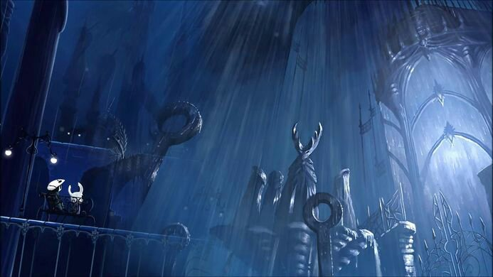

Um pequeno cavaleiro desperta em uma caverna escura. Ele ouve dois sons ao longe: À esquerda, um sussurro estranho. À direita, o som de água pingando.
Você começa sua jornada no Rio de Janeiro, subindo o Pico da Tijuca ao amanhecer para encontrar a primeira pista.
Em uma clareira escondida entre raízes, o cavaleiro encontra uma pequena larva presa em teias grossas. Ao lado dela, cravada em uma pedra, há uma lâmina brilhante, vibrando com energia estranha. Mas há pouco tempo... algo se aproxima. O que ele deve fazer?